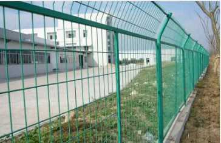
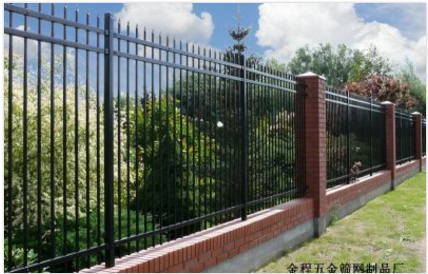
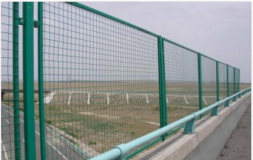

广州护栏网安装厂家
wj666导读：本篇文章为您介绍了广州护栏网安装厂家的信息，通过浏览本页面您可以更好的了解广州护栏网安装厂家。
佛山市南海区大沥盐步金程五金筛网制品厂是一家集生产、深加工、销售于一体的丝网生产专业企业。借助于得天独厚的环境优势和广大同仁的支持与帮助，加上全体员工的奋发努力，使我公司迅速发展成为一个技术力量雄厚、丝网经验丰富、检测手段齐全、可生产多种丝网产品的企业。专业护栏网得安装、护栏网得生产厂家、好得护栏网批发，金程五金为您一条龙服务，一个电话上门安装，实地考察。给您质量的保证。热线咨询：联系电话(微信同号)：18934371334(业务:马小姐)；18664220999(业务:尤小姐)；13118866606(总经理:杜先生)。

本公司主要生产：公路护栏网、框架护栏网、桥梁护栏网、双边丝护栏网、三角护栏网、桃型立柱护栏网、折弯护栏网、钢板网护栏网、勾花网护栏网、荷兰网护栏网、荷兰网、钢板网、天花钢板网及丝网深加工产品。
在此详细介绍下：公路护栏网是用于高速公路、铁路、机场、车站、服务区、保税区、露天仓储场、港口等领域的围栏。防腐处理：护栏网的表面处理方式有镀锌、热浸塑和喷塑三种。处理方式和颜色均可根据客户要求定做。
制作工艺：
采购冷拔丝——检验材质、丝径、校直截断——调机试生产并经检验第一片网——批量生产——过程检验——截断方管或立柱焊耳——镀锌或者喷塑、浸塑等表面处理及成品检验——装运前数量清点和质量的检验——发运出厂——质量反馈——服务改进措施。
公路护栏网
常用规格：
1. 网孔： 50mm×150mm 60mm×150mm 75mm×150mm 80mm×160 mm 100 mm×200 mm。
2. 丝径：塑后3mm—6.5mm。
3. 网片尺寸： 高度500—3000mm； 长度1500—4000mm。
4. 边框：15mm×20mm, 20mm×30mm,10mm×20mm
5. 立柱：方管 (30×30mm 50×50mm 60×60mm 70x70mm 80x80mm)矩形管 (30x50mm 50x70mm 60x80mm 80x100mm) 圆管 （38mm 48mm 60mm 75mm ） 立柱壁厚1mm-3mm
6. 附件： 防雨帽 连接卡 防盗螺栓
以上特殊规格均可加工定做
产品特点：
1、网、柱结构简练，造型美观。
2. 便于运输，安装不受地形起伏限制，对于山地、坡地、多弯地带适应性极强。
3. 采用网片、立柱、连接件、螺丝结构；立柱顶部防雨帽有铁制防雨帽和塑料防雨帽之分。
4. 整体网片的造型与设计更有利于施工人员的快捷安装。
5. 工程造价低，适合大面积采用。

锌钢护栏网是用于公路、小区、工厂、公园绿地等的美化与防护。具有高强度、高硬度、外观精美、色泽鲜艳等优点。采用无焊穿插组合方式进行安装，基材厚度是不锈钢的2-3倍，表面采用抗氧化粉末静电喷涂，增强了护栏的抗氧化抗紫外线、耐候耐腐能力。
锌钢护栏由基材和配件组成。
锌钢护栏型材的基材为高温热浸锌材料，热浸锌是指把优质钢材投入几千度的锌液池中，浸泡达一定时间以后锌液就会渗透到钢材中，使之形成一种特殊的锌钢合金，热浸锌材料表面不经任何处理在野外环境中即可达30年不锈蚀，如：高速公路护栏、高压电塔都是采用高温热浸锌材料，其防锈长达30年之久，彻底解决了多年来防锈、美观与安全之间的问题。
产品优势
(1)、安全性:采用高强度锌合金，经过热处理成形，并经过独特设计，一体成形，全无焊点，整体强度极大提高。
(2)、美观性:流线形的外观，柔和的色调，能协调周围的景观，能融和现代都市空间及自然环境，让你悠游其间。
(3)、实用性:表面经特殊工艺处理，形成永久保护膜，光滑平整，永不生锈，清洁方便，不需保养。
(4)、耐候性:本产品以其铝合金的特性，表面再经过特殊处理，所以不论在空气污染的都市或海盐腐蚀的海岸地区，均能安心使用，为您解决维修的后顾之忧

佛山市南海区大沥盐步金程五金筛网制品厂是一家集生产、深加工、销售于一体的丝网生产专业企业。借助于得天独厚的环境优势和广大同仁的支持与帮助，加上全体员工的奋发努力，使我公司迅速发展成为一个技术力量雄厚、丝网经验丰富、检测手段齐全、可生产多种丝网产品的企业。专业护栏网得安装、护栏网得生产厂家、好得护栏网批发，金程五金为您一条龙服务，一个电话上门安装，实地考察。给您质量的保证。热线咨询：联系电话(微信同号)：18934371334(业务:马小姐)；18664220999(业务:尤小姐)；13118866606(总经理:杜先生)。
以上是关于广州护栏网安装厂家的介绍，更多相关信息，请咨询在线客服。